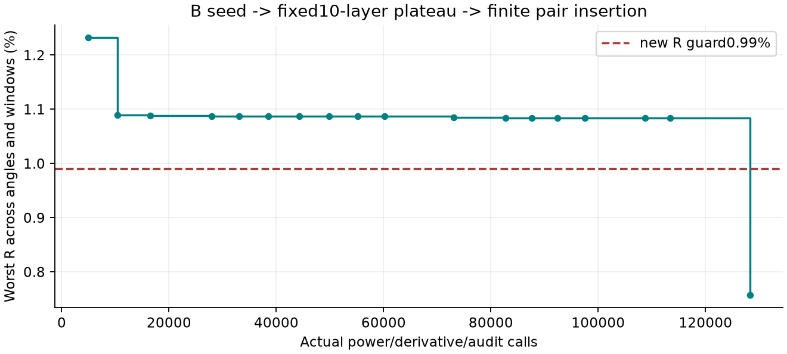
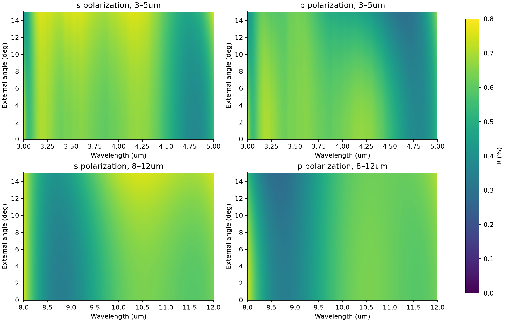

真实材料双窗：0–15° s/p 角度优化与独立验收
2026-10-20 · 固定来源 n/k 模型内的独立数值研究。原正入射 A/B 和 54 例诊断保持原样。
唯一推荐：11 层，3871.098426 nm。 层表 CSV /
JSON。SHA-256：
1b5275aa145216064f9395b703a078cfdcffaa17d28efd36f7d080fb402de368 3–5 μm、8–12 μm；空气侧入射 0–15°（含边界）；s/p 分别要求 R≤0.99%、T≥90.01%，原容差 10⁻⁶，未使用容差放宽。T 为进入半无限、来源特定 ZnS 的通量，A 为有限膜层吸收；不等同整片成品透射。
| 偏振 | 波段 / μm | 最大 R | 最低 T |
|---|
| s | 3–5 | 0.756956100% | 97.854700927% |
| s | 8–12 | 0.754927052% | 97.291484309% |
| p | 3–5 | 0.752322888% | 97.970008061% |
| p | 8–12 | 0.754405246% | 97.280190605% |
第二独立验收使用两级偏移波长/角度网格、源节点、边界与局部极值；加密级每窗 12401/12411 波长点、363 角度点。散射/全局 Maxwell 方程最大 R/T/A 差 9.44e-15，60 位高精度最大差 4.69e-15。没有连续域数学证明、制造偏差或批次材料标定。
层表与顺序
从基片向空气排列，第 1 层紧邻 ZnS 基片，第 11 层紧邻空气；入射计算顺序相反。厚度 nm、n/k 无量纲、外角单位度。
| 层号 | 材料 | 厚度 / nm |
|---|
| 1 | MgF2 | 67.165676 |
| 2 | ZnS | 364.671181 |
| 3 | MgF2 | 178.154614 |
| 4 | ZnS | 372.474750 |
| 5 | MgF2 | 338.037156 |
| 6 | Ge | 55.506161 |
| 7 | MgF2 | 506.438065 |
| 8 | ZnS | 173.209004 |
| 9 | MgF2 | 666.862731 |
| 10 | Ge | 20.644886 |
| 11 | MgF2 | 1127.934202 |
历史搜索处方为 12 层，含 0.1 nm NaCl。删除该层改变物理模型；本推荐 11 层已直接接受第二独立验收。
历史 12 层及其审计仅供追溯。
瓶颈与结构切换
从原 B 的 10 层出发，固定层序精修在最大 R≈1.08726% 出现局部平台。预先记录的有限结构目录比较材料替换、删除及成对插入；ZnS/MgF₂ 成对插入后跨越平台。搜索 42 次局部求解、128259 次物理谱评价、47734883 个波长评价，达标后停止。平台不是不可行性证明。删除数值下限层后没有再优化，而是重新审计 11 层。

原搜索改善轨迹；曲线终点为归档 12 层，最终 11 层验收另列。
11 层推荐处方的 s/p 双窗反射率；最终判定依据完整独立审计。证据与复算
用户“实际生产时吸收数据总是更低”的经验单列为待批次校准信息；不由 Querry 源样品高 k 推断所有 ZnS 的不可行性。MgF₂ 与 Ge 使用相应薄膜数据，ZnS 使用源样品代理；没有缺失 k 替代或越域外推。